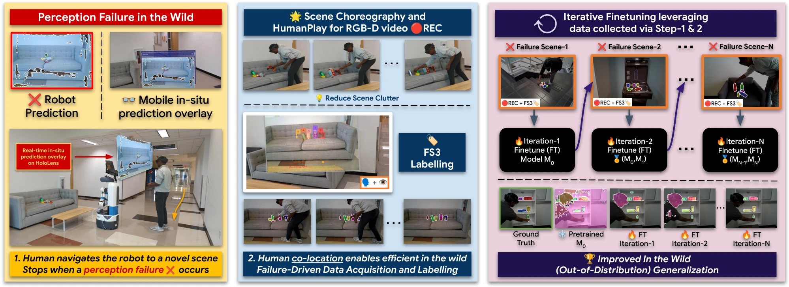
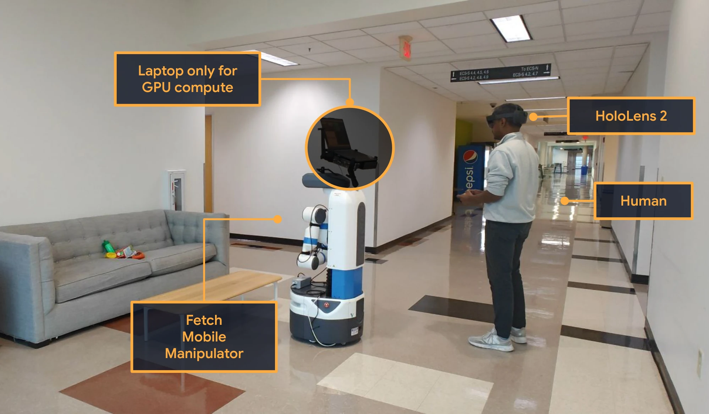
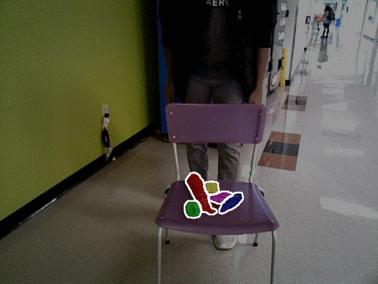
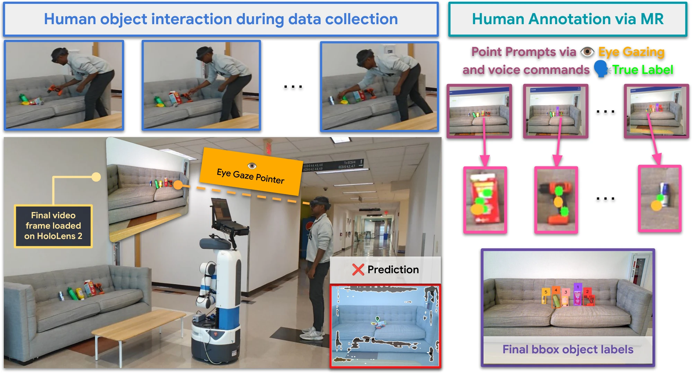
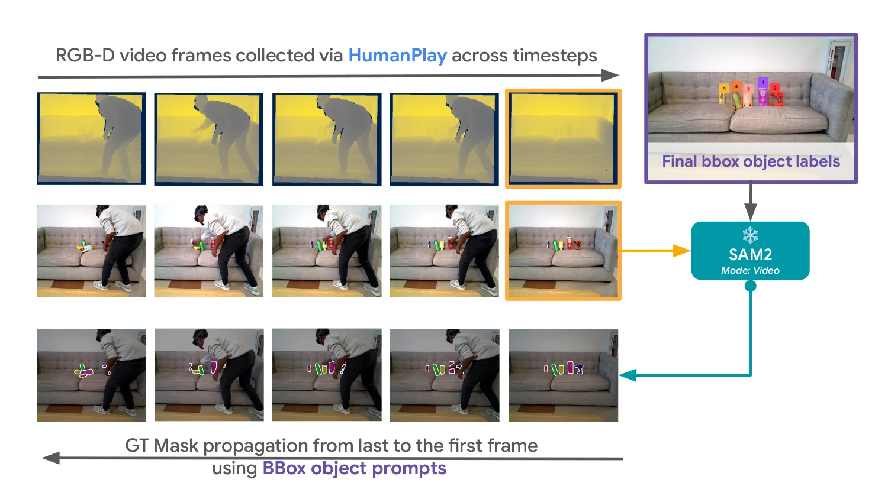
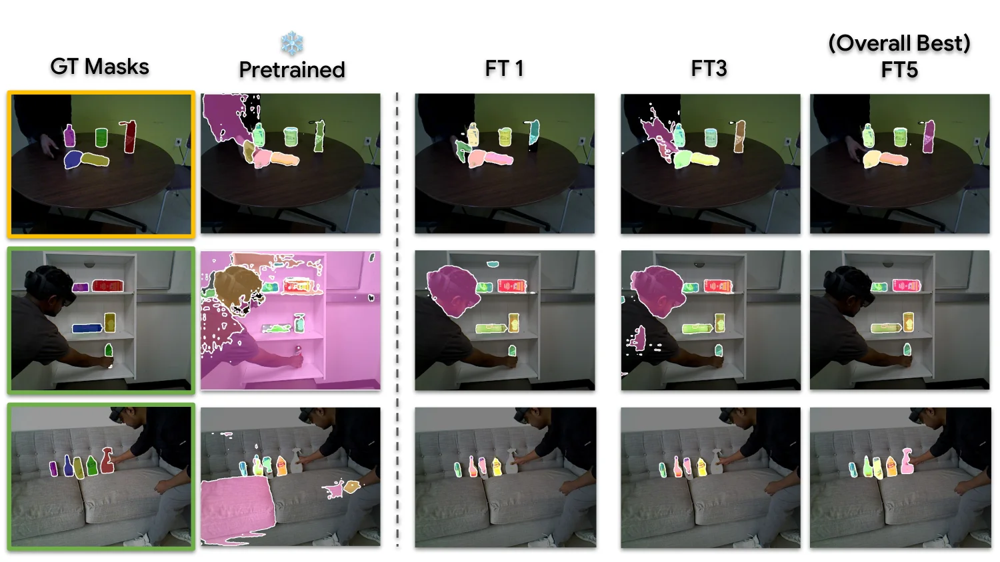
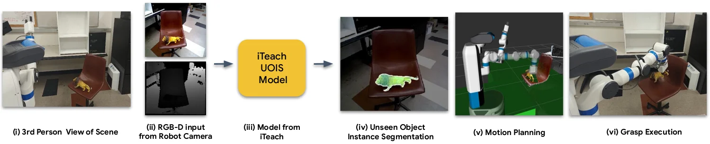

UOIS · Combined Score
3.1×
+54.6
Perception quality lift
before26.1
→
after80.7
Under Submission

Robotic perception models often fail in the real world due to clutter, occlusion, and novel objects. Existing approaches rely on offline data collection and retraining — slow, and blind to deployment-time failures. We propose iTeach, a failure-driven interactive teaching framework that adapts robot perception in the wild. A co-located human observes live predictions, triggers a short HumanPlay interaction on a failed object, and records an RGB-D sequence. Our Few-Shot Semi-Supervised (FS3) labeling annotates only the final frame using hands-free eye-gaze and voice; SAM2 propagates the mask across the sequence for dense supervision. Iterative fine-tuning on these samples progressively improves an MSMFormer UOIS model, translating into higher grasping and pick-and-place success on the SceneReplica benchmark and real-robot experiments.

A pretrained perception model fails in the wild under clutter, occlusion, and novel objects. A co-located human performs a short HumanPlay interaction, annotates a single frame with eye-gaze + voice, and we propagate the label across the short RGB-D sequence. Failure-driven samples feed an iterative fine-tuning loop; the best checkpoint is redeployed.

Hardware. Fetch mobile manipulator (RGB-D) · Microsoft HoloLens 2 (gaze + voice annotation, live prediction overlay) · Lenovo Legion Pro 7 laptop with RTX 4090 (inference, SAM2 propagation, fine-tuning). All compute runs onboard; the robot is driven by the human with a PS4 controller for scene exploration. RGB-D streams to the laptop over wired Ethernet; the HoloLens connects over a laptop-hosted Wi-Fi hotspot via the ROS-TCP connector.



Perception improves · Manipulation follows.

Only stage 02 differs across comparisons — everything else is held fixed.

Swap in iTeach-UOIS and the same real-robot pipeline starts handling clutter and unseen objects the pretrained baseline fails on — turning perception gains into reliable picks and places in the wild.
@misc{p2026iteachwildinteractiveteaching,
title = {iTeach: In the Wild Interactive Teaching for Failure-Driven Adaptation of Robot Perception},
author = {Jishnu Jaykumar P and Cole Salvato and Vinaya Bomnale and Jikai Wang and Yu Xiang},
year = {2026},
eprint = {2410.09072},
archivePrefix = {arXiv},
primaryClass = {cs.RO},
url = {https://arxiv.org/abs/2410.09072}
}Send any comments or questions to Jishnu: jishnu.p@utdallas.edu
Supported by
Thanks to Sai Haneesh Allu for assistance with the real-robot experiments.